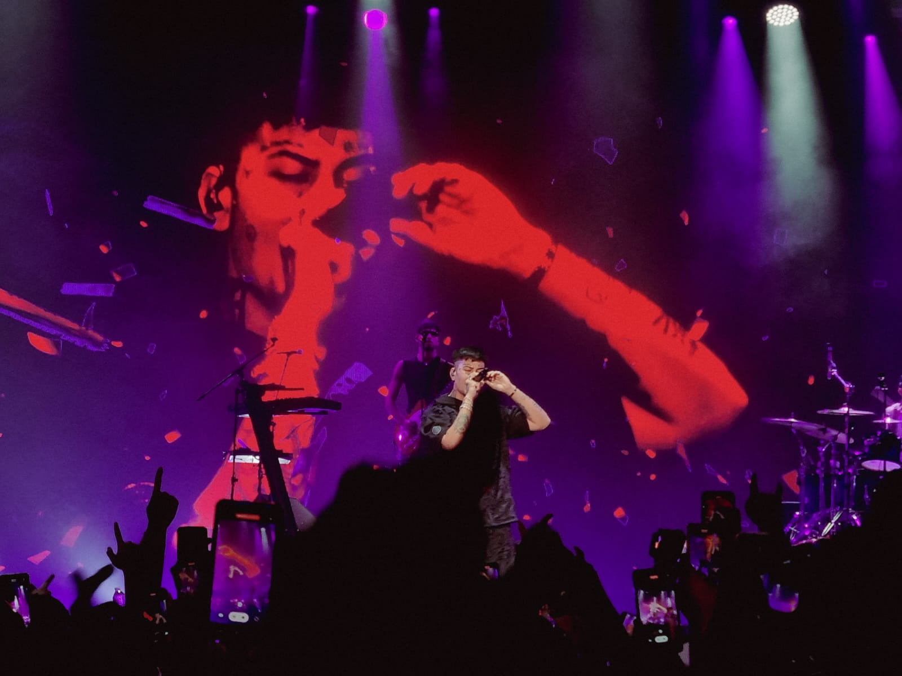

Al Duki es un freestyler y cantante argentino. Nació como Mauro Ezequiel Lombardo en Buenos Aires el 24 de junio de 1996. En 2013 participó por primera vez en una batalla, en el encuentro Madero Free, ganado un “2 vs. 2”. En 2015 se anotó en El Quinto Escalón de Parque Rivadavia, donde obtuvo buenos resultados. En 2016 llegó a la final de una de las fechas de El Quinto y participó en “El Campito Free VIII” de Ramos Mejía. En 2017 compitió nuevamente en El Quinto Escalón junto a MKS contra Paulo Londra y Beelze, saliendo ganador. Después de una gran trayectoria como freestyler, decidió empezar su carrera como artista musical debutando con su primera canción "No vendo trap" Una de las coasas más destacables de Duki son sus tatuajes y "SSJ" que significa Sangre Super Joven, el cual también es el nombre de su primer albúm lanzado en el año 2019. Actualmente cuenta con 6 álbumes y muchas más canciones, principalmente de genero urbano como reggaeton, trap, rap, etc. Si quieres saber más acerca de este gran artista, invitamos a escuchar su DUKI || BZRP Music Sessions #50 trabajo en el cual habla/rapea acerca de el mismo mediante la música.
